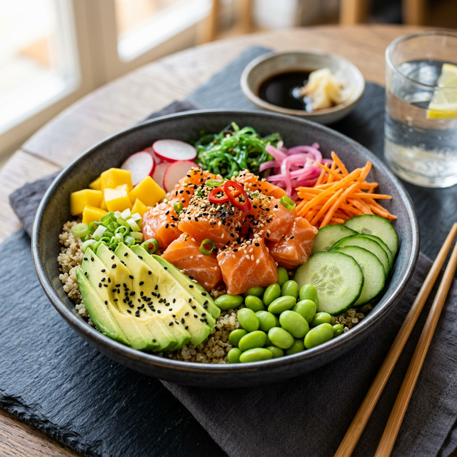
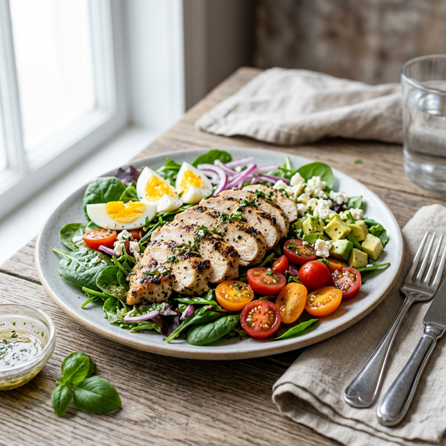
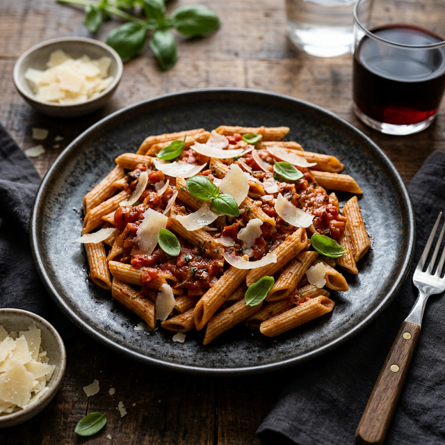
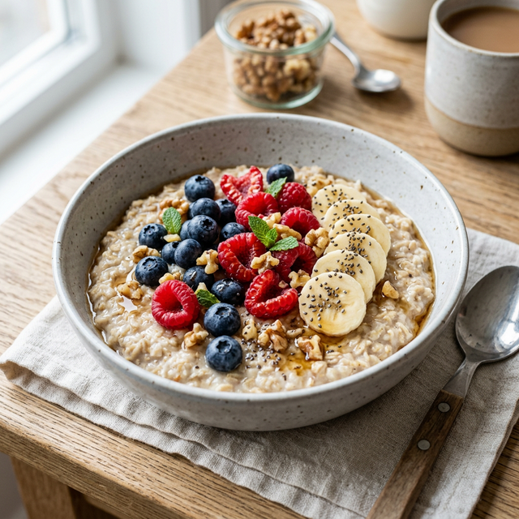
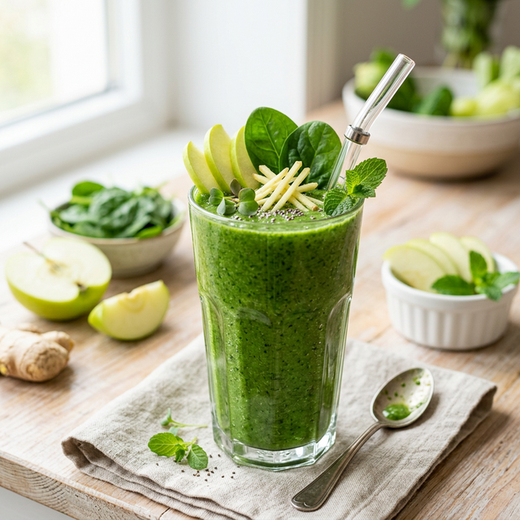
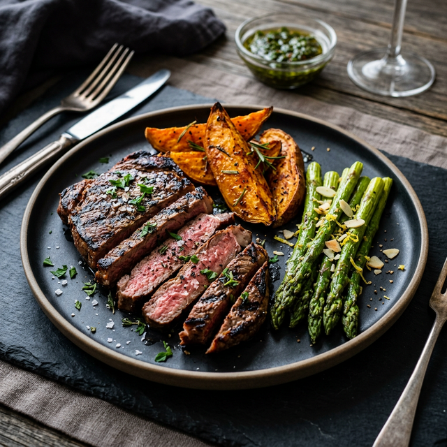

Rețete Sănătoase
Descoperă preparate delicioase, simplu de gătit, calculate perfect pentru obiectivele tale.

Poke Bowl cu Somon

Salată Proteică cu Pui

Paste Integrale cu Roșii și Busuioc

Bol de Ovăz cu Fructe de Pădure

Smoothie Verde Revigorant
